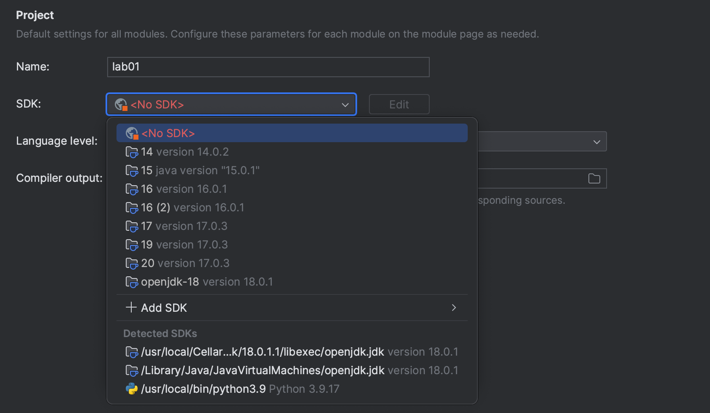
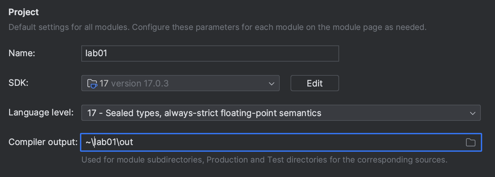

作业工作流程
作业工作流程
本指南介绍如何在 CS 61B 中设置作业。
获取骨架代码
本指南的视频演示可在 此链接 查看。
skeleton
远程仓库包含所有作业的骨架代码。
每当发布新作业，或者我们需要更新作业时，
你都需要从 skeleton 拉取。首先确保你在
sp24-s***
仓库目录中，然后：
git pull skeleton main
这会从名为
skeleton
的仓库（位于
https://github.com/Berkeley-CS61B/skeleton-sp24.git
）获取所有远程文件，并将它们
复制到你当前的文件夹中。
如果你收到类似
fatal: refusing to merge unrelated histories的错误， 你可以每次使用以下命令修复：git pull --no-rebase --allow-unrelated-histories skeleton main
（如果你正在做实验 1，此时请返回实验说明。）
在 IntelliJ 中打开
以下说明适用于
每一个
作业。
每次从
skeleton
拉取新的实验或项目文件后，你都需要再次
执行以下步骤。
-
启动 IntelliJ。 如果你没有打开任何项目 ，点击"Open" 按钮。如果你当前有一个打开的项目，导航到 "File → 打开" 。
-
找到并选择你当前作业的目录。例如，对于 实验 1，你需要选择
sp24-s***仓库中的lab01目录。 -
导航到 "File → 项目 Structure" 菜单，确保你在 项目 选项卡中。将项目 SDK 设置为你安装的 Java 版本。 如果下拉菜单中没有 17 或更高版本，请确保你已完全 下载并安装了 Java。

-
仍在 项目 选项卡中，将项目语言级别设置为 "17 - Sealed types, always-strict floating-point semantics"。
此时，Project 选项卡应该看起来像这样：

- SDK 设置为 Java 17 或更高版本
- 语言级别至少为 17，且不超过 SDK 版本。
-
编译器输出已填写，并设置为作业
目录，后面跟着
out
-
仍在 项目 Structure 中，转到 Libraries 选项卡。点击 " + → Java " 按钮，然后导航到
library-sp24，选择该 文件夹，然后点击 "Ok"。
-
点击 "Ok" 应用设置并离开 项目 Structure。
此时，如果配置正确：
- 每个 Java 文件的名称旁边应该有一个蓝色圆圈。
- 当你打开任何文件时，代码都不应该以 红色高亮显示。
提交到 Gradescope
-
使用
git add添加你的作业目录。例如，对于实验 1， 从你的仓库根目录（sp24-***）你可以使用git add lab01。从 作业目录中，你可以使用git add .。 -
使用
git commit -m "<commit message here>"提交文件。提交 消息是必需的。例如，git commit -m "Finished Lab 1"。 -
使用
git push origin main将代码推送到远程仓库。 -
在 Gradescope 上打开作业。选择 Github，然后选择你的
sp24-s***仓库和main分支，然后提交作业。你将 收到一封确认邮件，自动评分器将自动运行。
Gradescope 将使用你 Github 上代码的最新版本。
如果你认为
Gradescope 没有评分正确的代码，请使用
git status
检查你是否已添加、
提交和推送。
如果你发现自己由于某种原因无法推送， 请参阅 Git 常见问题 。